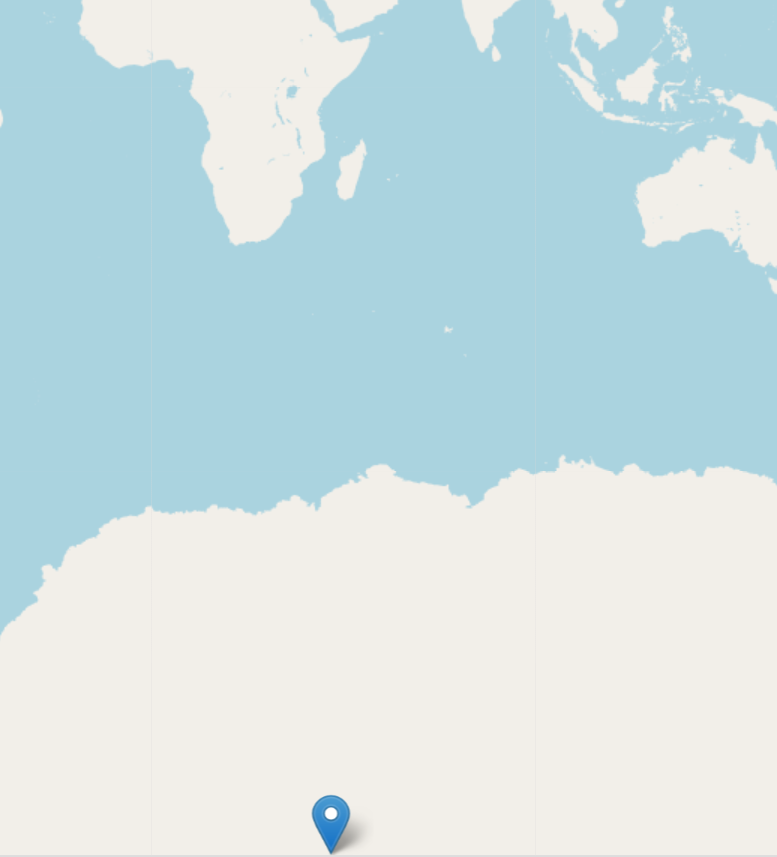

import folium
Coordinate Ordering in GeoJSON and Folium#
Understanding the Problem#
Leaflet expects coordinates in [latitude, longitude] format, but the GeoJSON standard uses [longitude, latitude] format. When you work with both GeoJSON and Folium together, this difference can cause markers and features to appear in the wrong locations on your map.
Why the Difference Exists#
Leaflet.js was designed to use [lat, lon] order, which is common in geographic information systems. GeoJSON follows RFC 7946, which specifies [lon, lat] order to align with mathematical conventions (x before y). Understanding both conventions is important when combining data from different sources.
Example 1: Correct Coordinates#
When you have GeoJSON data with [lon, lat] coordinates and want to display it in Folium, the coordinates need to be reversed for the Folium.Map location parameter.
import folium
# GeoJSON with correct [lon, lat] order
geojson_data = {
"type": "Feature",
"geometry": {
"type": "Point",
"coordinates": [-87.6298, 41.8781], # longitude, latitude (Chicago)
},
}
# Folium map with correct [lat, lon] order
m = folium.Map(location=[41.8781, -87.6298], zoom_start=12)
folium.GeoJson(geojson_data).add_to(m)
m
Both represent the same location (Chicago), but notice how the coordinates are reversed between the two formats.
Example 2: Wrong Coordinate Order Problem#
If you accidentally put coordinates in [lat, lon] order in your GeoJSON data, the marker will appear in the wrong location. This is one of the most common mistakes when combining GeoJSON with Folium.
import folium
# GeoJSON coordinates in wrong [lat, lon] order
geojson_data = {
"type": "Feature",
"geometry": {
"type": "Point",
"coordinates": [41.8781, -87.6298], # WRONG: latitude, longitude
},
}
m = folium.Map(location=[41.8781, -87.6298], zoom_start=12)
folium.GeoJson(geojson_data).add_to(m)
m

GeoJSON interprets the coordinates as [lon, lat], so when you provide [lat, lon] by mistake, the point ends up in the wrong location. In this case, the marker would appear far from Chicago.
Example 3: Converting Between Coordinate Orders#
If you have coordinates in [lat, lon] order but need them in [lon, lat] format for GeoJSON, you can flip them by swapping their positions. This is useful when working with data from sources that use different conventions.
import folium
# Start with coordinates in [lat, lon] order
wrong_order = [41.8781, -87.6298] # latitude, longitude
# Flip to [lon, lat] order for GeoJSON
correct_order = [wrong_order[1], wrong_order[0]]
geojson_data = {
"type": "Feature",
"geometry": {"type": "Point", "coordinates": correct_order}, # now [lon, lat]
}
m = folium.Map(location=[correct_order[1], correct_order[0]], zoom_start=12)
folium.GeoJson(geojson_data).add_to(m)
m
By swapping the coordinate positions, you convert from [lat, lon] to [lon, lat]. This approach works for individual coordinates, though for large datasets you may prefer automated solutions.
Example 4: Using GeoPandas#
GeoPandas provides a convenient way to handle coordinate ordering automatically. GeoPandas uses [lon, lat] order by default, which matches the GeoJSON specification.
import folium
import geopandas as gpd
from shapely.geometry import Point
# Create a GeoDataFrame with points
# Shapely/GeoPandas uses [lon, lat] order automatically
points = [Point(-87.6298, 41.8781), Point(-118.2437, 34.0522)]
gdf = gpd.GeoDataFrame(geometry=points, crs="EPSG:4326")
# When you pass a GeoDataFrame to folium.GeoJson,
# the coordinates are already in the correct [lon, lat] order
m = folium.Map(location=[41.8781, -87.6298], zoom_start=4)
folium.GeoJson(gdf).add_to(m)
m
GeoPandas handles the coordinate order for you, eliminating the need to manually track which format you’re using.
How to Detect Swapped Coordinates#
If your markers are appearing in the wrong location, you likely have a coordinate ordering issue. Signs include:
Markers appear far from where you expected them
Markers appear completely off the map or in the ocean
The location makes sense geographically but is in the wrong hemisphere
If you notice these issues, check whether you’re mixing [lat, lon] and [lon, lat] formats. The fix is usually as simple as reversing your coordinate order.
Best Practices#
Always verify the coordinate format of your data source before loading it into Folium
Remember the key difference: GeoJSON uses [lon, lat], Folium uses [lat, lon]
Use GeoPandas when possible to avoid manually managing coordinate order
Test your first few markers to confirm they appear in the correct location before processing large datasets
When combining data from multiple sources, document which coordinate order each source uses